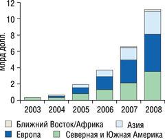
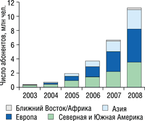
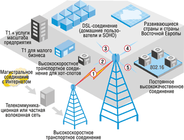

Александр Семенов
Любому пользователю компьютера в идеале хотелось бы мгновенно перекачивать из Интернета на свой ПК все, что заблагорассудится. Телефонный модем позволяет делать это со скоростью порядка 10 Кбит/c, выделенная линия обеспечивает несколько сотен килобит в секунду. И только широкополосный доступ дает возможность приблизиться к вожделенным мегабитным скоростям, которые позволяют надеяться на просмотр кинофильмов и прочие мультимедийные удовольствия.
В принципе широкополосным доступом в Интернет можно пользоваться уже несколько лет, но большинству пользователей он пока недоступен. На конец 2002 г. во всем мире, по данным InStat/MDR, насчитывалось около 46 млн таких пользователей, больше всего было их в США, но и там лишь в 17% домов предусматривалась эта возможность. Что же мешает активному распространению широкополосного доступа? Проблема в том, что способы организации его для пользователей - DSL или кабельное соединение - имеют ограниченные возможности, поскольку не всегда у пользователей есть кабельное или DSL-оборудование, а кроме того, эти услуги недешевы. Чаще всего они доступны лишь в центрах крупных городов.
Однако новая беспроводная технология, над которой активно работает сейчас корпорация Intel (http://www.intel.com), может стать реальной заменой DSL и кабелю и решить проблему последней мили в больших городах. Речь идет о стандарте беспроводной связи IEEE 802.16, который изначально был задуман как способ организации работы беспроводных сетей на больших городских территориях, он еще называется IEEE WirelessMAN (Metropolitan area network - сети районов больших городов).
Стандарт 802.16 (его еще называют WiMAX - по аналогии с Wi-Fi) дает как бизнесу, так и домашним пользователям новый и, что очень важно, быстрый способ получить широкополосный доступ к информации. Широкополосный беспроводной доступ лишен недостатков, присущих DSL- и кабельным соединениям. Его проще разворачивать и увеличивать площадь покрытия, он более гибок. Сети 802.16 очень похожи на традиционные сети мобильной связи: здесь тоже есть базовые станции, действующие в радиусе нескольких километров (до 50 км), причем их не обязательно устанавливать на вышках - для этого вполне подходят крыши домов, водонапорные башни или элеваторы. Пользовательское оборудование аналогично обычному набору для спутникового телевидения, с его помощью осуществляется соединение с базовой станцией. Кроме того, связь по стандарту 802.16 может реализоваться и через совместимое оборудование, например, через точки доступа 802.11.
"Две технологии - Wi-Fi и WiMAX - в течение следующего десятилетия преобразят всю телекоммуникационную отрасль. Они дадут нам шанс подключить ту часть планеты, которая не имеет сегодня доступа в Интернет", - заявил в Женеве на главной мировой выставке по телекоммуникациям ITU Telecom World 2003 исполнительный вице-президент корпорации Intel и генеральный менеджер подразделения Intel Communications Group Шон Мэлони (Sean Maloney). По оценкам исследовательской компании Intex Management Service (IMS), объемы продаж оборудования стандарта 802.16 в ближайшие годы будут быстро расти (рис. 1). Заметно вырастет, по прогнозам IMS, и число подписчиков широкополосного беспроводного доступа - эти данные приведены на рис. 2 (в прогнозах сделаны следующие допущения: стандарт 802.16a MAN одобрен; стоимость рабочего места абонента составляет 350 долл.; 1 CPE = 1 абонент, даже если он находится в точке разветвления; абоненты хот-спотов не относятся к "последней миле").
|  | Рис. 1. Объем рынка оборудования для широкополосного беспроводного доступа на последней миле в диапазоне до 11 ГГц. Источник: IMS (исследование для Intel,12/02).
|
|  | Рис. 2. Рост числа подписчиков широкополосного беспроводного доступа на последней миле в диапазоне до 11 ГГц. Источник: IMS.
|
802.16 - это недорого
По оценкам Intel, в США сегодня более 2400 Интернет-сервис-провайдеров, обслуживающих более 6000 рынков. К сожалению, они работают с дорогим нестандартным оборудованием, которое несовместимо с оборудованием других производителей. Отсутствие стандартов не только затрудняет распространение беспроводного широкополосного доступа, но и мешает сделать эту услугу конкурентоспособной и прибыльной. И все эти трудности устранит внедрение стандарта 802.16.
По технологии 802.16 одна базовая станция может обслуживать тысячи пользователей и предоставлять им услуги разного уровня (рис. 3): например, ее достаточно для одновременной работы 60 бизнес-пользователей с возможностями Т1 (скорость передачи до 2 Мбит/с) и сотен домашних пользователей. В отличие от Wi-Fi, действующего в пределах сотни метров, оборудование 802.16 обеспечивает связь на расстоянии в 30-50 км и даже больше с полосой пропускания до 70 Мбит/с.
|  | Рис. 3. Стандарт IEEE 802.16 предоставляет удобные решения для самых разных потребителей.
|
Выгоды от внедрения стандарта 802.16 аналогичны преимуществам любого стандартного оборудования: большие объемы производства, относительно низкие цены на устройства, снижение тарифов за счет конкуренции между разными провайдерами услуг. Кроме того, 802.16 станет решением последней мили для территорий, еще не охваченных проводной связью.
Организация корпоративной сети с доступом по типу T1 занимает сегодня до трех месяцев и более. Беспроводные широкополосные технологии на основе стандарта 802.16 со скоростью сетевого доступа, аналогичной кабельным широкополосным решениям, позволят сократить сроки развертывания такой сети до нескольких дней, а ее стоимость будет ниже в несколько раз. У провайдеров появится возможность предоставлять средства высокоскоростного подключения "по требованию" организаторам разнообразных публичных мероприятий (например, торговых ярмарок), обслуживать сотни тысяч пользователей через общественные точки доступа, отвечающие спецификации 802.11, или же организовать временное широкополосное подключение в местах производства текущих работ (например, на строительных площадках).
Незаметный роуминг между сетями
Первый вариант стандарта 802.16 работал в полосе частот 10-66 ГГц и обеспечивал соединение только в пределах прямой видимости. Расширение стандарта, 802.16a, принятое в январе 2003 г., работает на более низких частотах - от 2 до 11 ГГц, что позволяет организовывать связь и вне пределов видимости, тем самым резко расширяя число обслуживаемых пользователей. В данный момент рабочая группа разрабатывает возможность организации роуминга между разными базовыми станциями 802.16, чтобы сделать эту связь аналогом мобильной. Есть уже и специальная группа 802.16е, занимающаяся организацией роуминга между различными сетями, чтобы связь (незаметно для пользователя) могла переходить из беспроводной сети 802.11b в сеть 802.16 или даже из проводной сети 802.11 в 802.16. Группу изучения роуминга для сетей стандарта IEEE 802 возглавляет телекоммуникационный эксперт компании Intel Д. Джонстон (D.J. Johnston).
Сегодня для пользователей связи стандарта 802.11 ее услуги доступны, только если они находятся в непосредственной близости от хот-спота (иначе говоря, от точки доступа). Выходя из сферы ее действия, они теряют соединение. С помощью сети и оборудования 802.16e пользователи получат возможность "оптимального соединения": через 802.11 в пределах действия хот-спота и через 802.16, находясь в пределах действия WiMAX. После внедрения этого стандарта производители оборудования смогут больше не думать о том, чтобы обеспечить связь от точки до точки, и сосредоточат все силы на совершенствовании терминальных устройств.
По мнению г-на Джонстона, в недалеком будущем пользователь, имея ноутбук или КПК со встроенными возможностями стандарта 802.16e, будет постоянно оставаться на связи во всем городе. Например, он сможет работать через Ethernet или 802.11 на рабочем месте, а в путешествиях по городу или даже его пригородам пользоваться связью 802.16. Более того, принятие WiMAX в качестве европейского стандарта обеспечит активным путешественникам столь же незаметный роуминг по всей Европе.
Гибкость и масштабируемость
Стандарт 802.16 даст бизнес-пользователям преимущество гибкости - особенно тем, кому часто приходится менять операторов связи или тем, кто организует новый бизнес. Вместо того, чтобы неделями ждать организации линий Т1 или DSL для широкополосного доступа, они смогут быстро получить беспроводной широкополосный доступ.
Еще одно преимущество 802.16 - масштабируемость. Представьте себе, например, несколько сотен участников какой-нибудь конференции, которые интенсивно пользуются связью через хот-спот в отеле. С доступом в локальную сеть у них не возникнет проблем, поскольку 802.11 предоставляет вполне достаточную для этого полосу пропускания. Но если они пожелают одновременно поработать в Интернете или получить доступ в свою корпоративную сеть через выделенные соединения? В отеле может быть достаточно мощное Т1-соединение, но для обслуживания, скажем, пяти сотен активных пользователей его явно не хватит. При помощи беспроводной сети емкость связи можно увеличить очень быстро, чего проводная связь в принципе сделать не может.
Данные очередных исследований рынка мобильных ПК, проведенных аналитической компанией IDC, демонстрируют заметный рост покупательского интереса к моделям с интегрированными беспроводными интерфейсами. Согласно опросу, проведенному IDC среди пользователей ноутбуков, примерно 70% респондентов намерены приобрести следующий портативный ПК с обязательной поддержкой WLAN. Интерес покупателей к ноутбукам с поддержкой Wi-Fi растет по мере увеличения числа мест, оборудованных хот-спотами Wi-Fi. Так, по предварительным данным IDC, ноутбуки на базе Centrino, проданные в 2003 г., составят примерно 42% от суммарных мировых продаж. Тенденции таковы, что в ближайшие 3-6 месяцев, по мнению аналитиков IDC, платформа Centrino станет доминирующей на рынке ноутбуков, а уже в 2006 г. ноутбуки с интегрированным WLAN-интерфейсом займут около 95% рынка.
В настоящее время количество хот-спотов WLAN во всем мире приблизилось к 24 тыс. точек. Предполагается, что дополнительный импульс развитию беспроводных сетей во всем мире придаст внедрение магистрального стандарта WiMAX.
Роль WiMAX
WiMAX (Worldwide Interoperability for Microwave Access, http://www.wimaxforum.org) - это некоммерческая организация, созданная по инициативе корпорации Intel с участием ведущих производителей телекоммуникационного оборудования с целью устранить проблемы совместимости, с которыми уже столкнулись операторы при развертывании сетей 802.11. В WiMAX входит около 30 членов, среди которых Airspan Networks, Alvarion, Aperto Networks, Ensemble Communications, Fujitsu Microelectronics America, Intel, Nokia, OFDM Forum, Proxim, Wi-LAN и т. д.
В течение следующего года WiMAX будет разрабатывать планы достижения совместимости и тестирования, выбирать лаборатории для сертификации, организовывать специальные конференции по совместимости для производителей оборудования 802.16. Совместно с Европейским институтом стандартов телекоммуникаций (ETSI) будет вестись разработка и согласование планов, касающихся HIPERMAN, европейского стандарта широкополосной беспроводной связи для городских районов.
Организация WiMAX, как говорит Роджер Маркс (Roger Marks), председатель инициативной группы IEEE по разработке стандарта 802.16, выступила инициатором устранения препятствий к внедрению новой технологии, наглядно демонстрируя возможности взаимодействия и снижения стоимости развертывания беспроводных широкополосных сетей. Усилия группы WiMAX должны помочь распространению оборудования стандарта 802.16 по всему миру. "Если усилия WiMAX увенчаются успехом, - говорит президент WiMAX Маргарет Лабрек (Margaret LaBrecque), - то уже первые системы 802.16a, которые поступят в коммерческую эксплуатацию, будут совместимы друг с другом".
"Организация беспроводного широкополосного доступа в Интернет в более чем 2500 регионах США, где все еще ощущается дефицит услуг Интернет-провайдеров, сейчас идет с применением решений на основе индивидуально разработанных технологий, - отмечает г-жа Лабрек. - Внедрение решений на основе стандарта 802.16 приведет к наращиванию производительности и надежности коммуникационных систем одновременно со снижением стоимости оборудования и инвестиционного риска".
Руководствуясь тем же подходом, что и Wi-Fi Alliance, которому удалось дать мощный импульс развитию беспроводных локальных сетей, некоммерческая организация WiMAX занимается разработкой методики и тестированием оборудования на взаимодействие. Успешно прошедшие это тестирование системы получают удостоверение "Сертифицировано WiMAX".
Есть и первые удачные примеры внедрений WiMAX. Компания Meridian Telekom, Интернет-сервис-провайдер на Филиппинах, предоставляет услуги WiMAX в Маниле и окружающих столицу провинциях около двух лет. Как говорит директор Meridian Telekom Мила Вилануева, клиенты пользуются услугами компании для соединения своих корпоративных сетей с Интернетом. По мнению г-жи Вилануевой, то, что к WiMAX проявляют интерес такие гиганты бизнеса, как Intel и Nokia, несомненно, приведет к бурному прогрессу этой технологии.
Широкополосный доступ в Интернет в мире
С повсеместным распространением широкополосного доступа растет число пользователей, загружающих цифровые мультимедийные материалы для распространения в домашних сетях. По мнению IDC, на эту тенденцию следует обратить внимание, поскольку она означает, что в 2004 г. потребители начнут больше приобретать смартфоны с видеокамерами и пишущие DVD-проигрыватели с поддержкой широкополосного доступа. Судя по всему, в ближайшее время будет достигнута критическая масса пользователей, после чего их захлестнет новая волна сервисов и материалов, предназначенных для пользователей широкополосного доступа, - а это, в свою очередь, повысит требования к пропускной способности широкополосных соединений и увеличит спрос на широкополосное подключение к Интернету.
Крупные компании, занимающиеся производством вычислительной техники и бытовой электроники, а также разработкой материалов и услуг, создали группу Digital Home Working Group (DHWG), перед которой поставлена задача - разработать и согласовать стандарты взаимосовместимости, позволяющие без проблем использовать и распространять цифровые материалы в домашней сети. Разрабатываются также процессы и протоколы, с помощью которых владельцы ценных материалов смогут использовать их цифровые версии во всех системах дома, сохраняя защиту авторского права.
В Европе быстрое распространение домашнего широкополосного доступа в Интернет не проявляет признаков замедления. Исследования аналитической компании Forrester показывают, что в 2002 г. число европейских семей, имеющих широкополосный доступ в Интернет, выросло на 92%. Согласно исследованиям OECD, к концу 2003 г. число пользователей широкополосного доступа в Интернет увеличилось с 8 до 17 млн, т. е. более чем в два раза всего лишь за год. По оценкам Point-Topic, в Европе насчитывается 3,7 млн пользователей широкополосного доступа в Германии, 2,0 млн во Франции, 1,4 млн в Италии и 1,0 млн в Великобритании.
Для снижения риска "цифрового неравенства" между городами и сельскими областями Европейская комиссия выпустила рекомендации по использованию так называемых структурных фондов ЕС для развития инфраструктуры широкополосного доступа в отстающих районах. По оценкам Европейской комиссии, более 10 млрд долл. из этих фондов будет к концу 2006 г. использовано на проекты, имеющие отношение к "информационному сообществу".
| "Мы верим в то, что WiMAX станет своеобразным катализатором роста рынка широкополосного беспроводного доступа, так же, как Wi-Fi стимулировал развитие рынка беспроводных локальных сетей", - отметил Зви Слонимский, один из руководителей компании Alvarion, занимающейся организацией беспроводного доступа. |
Интересен прогноз исследовательской компании Pyramid Research, сделанный в опубликованном в ноябре 2003 г. докладе "Wi-Fi и WiMAX: мир, свободный от проводов" (Wi-Fi and WiMAX: Unwiring the World). Аналитики Pyramid Research предполагают, что на долю WiMAX к 2008 г. будет приходиться 60% всего рынка широкополосного беспроводного доступа. WiMAX будет проникать в беспроводные сети в два этапа. Первый из них начнется в середине 2004 г., когда на рынке появятся коммерческие продукты. По мнению аналитиков Pyramid, они мало будут отличаться по своим техническим характеристикам и цене от ранее предлагавшихся устройств. Второй этап начнется тогда, когда новое оборудование станет поддерживать мобильные абонентские устройства.
По прогнозу Pyramid, к 2008 г. в мире будет эксплуатироваться от 2 дo 4 млн широкополосных радиоканалов, доход от которых может достигнуть 2 млрд долл. В первую очередь новый стандарт будет востребован в Азии, Центральной и Восточной Европе. В ближайшие пять лет в этих регионах будет развернуто около 2 млн линий широкополосного беспроводного доступа. Причем в развивающихся странах они будут широко использоваться для предоставления услуг телефонной связи.
Перспективы WiMAX в России
В ноябре 2003 г. в Москве с визитом побывал Джейсон Чжэн, вице-президент и директор группы маркетинга и продаж корпорации Intel. По его оценке, развитие широкополосного доступа в России - это принципиально важный шаг. "Мы прилагаем очень большие усилия для того, чтобы как можно скорее шло внедрение новейших технологий в области широкополосного доступа в Интернет и организации точек общественного доступа - хот-спотов, в создании широкополосной и беспроводной связи для малого и среднего бизнеса, для крупных предприятий", - сказал г-н Чжэн. Чтобы быстрее внедрить в России широкополосный доступ, в том числе и беспроводной, корпорация Intel работает со всеми заинтересованными сторонами, включая представителей правительства, Комитета по лицензированию радиочастот, а также с частными компаниями.
"В области внедрения последних решений для широкополосной связи и беспроводного доступа, - отметил Джейсон Чжэн, - у России есть уникальный шанс не просто учиться у западных партнеров, а, внедряя новейшие технологии, совершить гигантский скачок вперед и обогнать их, став в ряды пионеров в использовании этих инноваций". По словам г-на Чжэна, именно поэтому корпорация прилагает такие усилия и делает столь масштабные инвестиции для того, чтобы Россия смогла войти в число передовых стран по внедрению широкополосного доступа и других новейших технологий.
***
Получив широкое распространение, WiMAX станет доступен пользователям так же, как сегодня доступна вода или электричество. Мобильная связь превратится в одну из коммунальных услуг, которые предоставляются практически без ограничений - во всяком случае, в крупных городах. Сегодня уже не стоит вопрос: "WiMAX или не WiMAX?". Все с нетерпением ждут, когда же это произойдет...